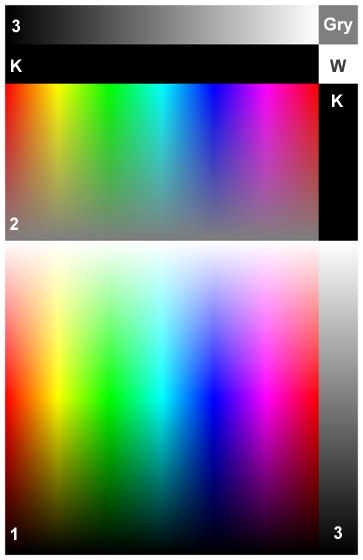
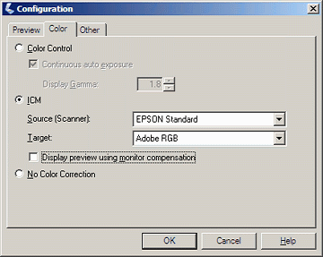
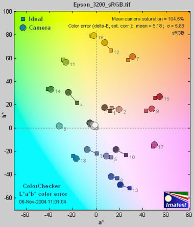
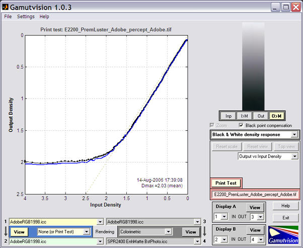
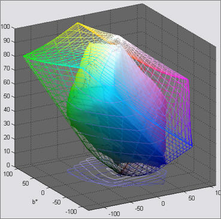
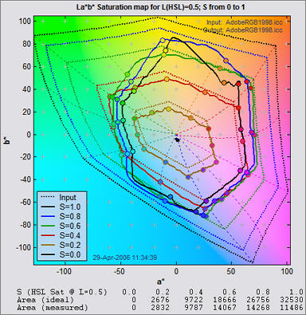
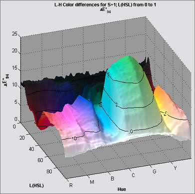
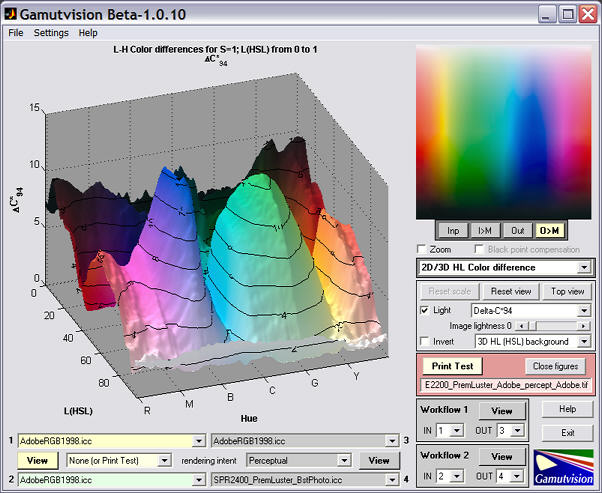
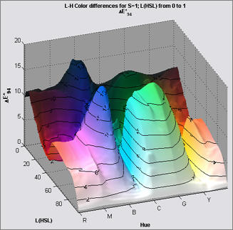
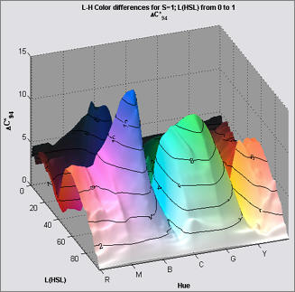

Gamutvision Print Test measures several of the key factors that contribute to photographic print quality, including
Gamutvision Print Test. measures these factors from a printed test pattern scanned on a flatbed scanner. No specialized equipment is required. You can observe response irregularities by viewing the test print, but you need to run Print Test to obtain detailed measurements of the print's color and tonal response.
The essential steps in running Print Test are
Color quality is a function of gamut— the range of saturated colors a print can reproduce, as well as overall color response— the relationship between file pixels and print color. Tonal quality is strongly correlated with Dmax— the deepest attainable black tone, as well as the tonal response curve. Prints usually appear weak in the absence of truly deep black tones.
The test pattern, shown (reduced) on the right, was generated using the HSL color representation.
The key zones are,
|
 |
The zones labelled K, Gry, and W are uniform black (pixel level = 0), gray (pixel level = 127), and white (pixel level = 255), respectively.
| Assigning a profile: To explore the effect of working color space on print quality you may want to change the ICC profile of the test image without changing the image data. |
In Photoshop: Click Image, Mode, Assign Profile... |
In Picture Window Pro: Click Transformation, Color, Change Color Profile... Set Change: (the bottom setting) to Profile Setting Only. |
| Scanner settings and performance verification | ||
| For the Epson 3200 flatbed scanner, the Configuration dialog box, shown on the right, is opened by clicking Configuration... in the main window. If you have a trustworthy custom profile for your scanner, you should enter it in the Source (Scanner): box. The Epson Standard (default) profile is shown. If the custom profile is not visible, go to Control Panel, double-click on Scanners and Cameras, right-click on your flatbed scanner, click Properties, then click on the Color management tab. Click then select the custom profile. (A lotta steps!) Target: contains the output profile for the scan. Adobe RGB is recommended in most cases because its gamut exceeds that of most high quality printers: sRGB (the default) may not be sufficient. Make sure to select the same Color space for the scanner in the Print test input dialog box. Note: this profile is not embedded in the scanner output. This is a deficiency in the Epson scanner software: almost a bug (though a common bug; it appears in many cameras and raw converters.). You need to remember the profile and embed it in the file without changing the image data. See Assigning a profile, above. |
||
|
|  | Scanner profiling on a budget from Photographical.net has a nice introduction to the process. Part 2 describes a promising free program called IPhotoMinusICC. (I has lots of poorly-documented options. I tried it and didn't get good results. I didn't take the time to figure out where I went wrong.) There are also several commercial programs of interest: Profile Mechanic - Scanner from the creators of my favorite image editor, Picture Window Pro. Works with IT8, GretagMacbeth ColorChecker, and other charts. Profile Prism MonacoEZColor |
Print Test results are filtered by the color space of the scanned file. The Windows default is sRGB, which has a limited gamut. For best results you should scan to a color space with a larger gamut— comparable to your printer. I recommend Adobe RGB (1998). Wide Gamut RGB, which hs a gamut far larger than any printer you're likely to encounter, offers little advantage over Adobe RGB.
Some results can be found in the Gamutvision Tour and in Finding defective profiles.
A few results are shown below for the Epson 2200 printer with Ultrachrome inks, Premium Luster paper, and the standard 1440 dpi Epson profile. Gamutvision Print Test can produce all of the results available in Imatest Print Test, and more: it takes advantage of Gamutvision's versatile display, which makes it easy to compare Print Test results with results derived from Profiles.
The Figure below contains the grayscale density response and the maximum density of the print, Dmax, where density is defined as –log10(fraction of reflected light). The blue and black curve are for the two grayscale regions. The value of Dmax (2.03) is the average of the upper and right black areas. This value is respectable for a luster (semigloss) paper. (The newer R2400 has higher Dmax values.) Matte surfaces tend to have lower values, typically around 1.6 - 1.8.
The upper plot shows print density as a function of the original file density, log10(original pixel level (in the test pattern)/255). This corresponds to a standard density-log exposure characteristic curve for photographic papers. The blue plot is for the upper grayscale; the black plot is for the lower-right grayscale. Slightly uneven illumination is evident.

When Print Test is active, the Print Test area is highlighted in pale red. Profile 1 and 2 are used, and Rendering intent is set to None.
CIELAB is a relatively perceptually uniform device-independent color space, i.e., that the visible difference between colors is approximately proportional to the distance between them. It's not perfect, but it's far better than HSL (where Y, C, and M occupy narrow bands) or or the familiar CIE 1931 xyY color space, where gamuts are represented as triangles or hexagons inside the familiar horseshoe curve and greens get far more weight than they should. The 3D L*a*b* plot, shown on the right, contains the most complete display of the gamut boundary. It can be rotated or zoomed as desired. |
 |
Colors can be represented on the CIELAB a*b* plane, where a* goes from cyan-green to magenta, and b* goes from blue to yellow. a* = b* = 0 is neutral gray or white (zero chroma). The colors of the a*b* plane are represented roughly in the background of the Figure on the right. L = 0.5 Saturation results are also well suited for display on the CIELAB a*b* plane. Gamuts are shown for 0 ≤ S ≤ 1 in steps of 0.2. The dotted lines and shapes are the ideal values (the color space used to print the pattern) and the solid shapes are the measured values. Gamut is excellent for S = 0.2 (brown curve) and 0.4 (red curve). But compression becomes apparent around S = 0.4 for magenta, blue, and green, where the printer starts to saturate. Increasing S above these values doesn't increase the print saturation: in fact, saturation decreases slightly at S = 1. This is the result of limitations of the Epson 2200's pigment-based inks and weaknesses in the standard Epson ICC profile. The good performance for relatively unsaturated colors (S ≤ 0.4) is extremely important: skin tones and other subtle tones should reproduce very well on the Epson 2200. |
 |
With Saturation maps, differences between printers, papers, and profiles are immediately apparent. These differences are far more difficult to visualize without Gamutvision Print test because each image has its own color gamut. One image may look beautiful but another may be distorted by the printer's limitations.
3D HL color difference plots are extremely valuable for visualizing color response because they are clear and visually striking. They can display any of a large number of color difference metrics. The plot on the right shows ΔE*94 with HSL H and L as the independent axis. Several ΔE* and ΔC* metrics can be chosen. The ΔC* metrics do not include luminance L* in their calculation. The display on the right shows large values of ΔE*94 (> 15) for light greens and cyans. Much of this difference is apparently due to a darkening of the light greens. The difference is much lower in the ΔC*94 plot below. Note that the vertical scaling has changed. |
 |

When color differences are calculated from the ICC profiles, rather than the scanned test print, the difference between ΔE*94 (below, left) and ΔE*94 (below, right) is smaller. The large green-cyan peak in ΔE*94 is tamed, but the general features are remarkably similar. More comparisons can be found in the Gamutvision Tour and in Finding defective profiles.
ΔE*94 from ICC profile  |
ΔC*94 from ICC profile  |
Digitization and Metric Conversion for Image Quality Test Targets by William Kress discusses the use and accuracy of flatbed scanners for measuring print quality.
{kind=link}